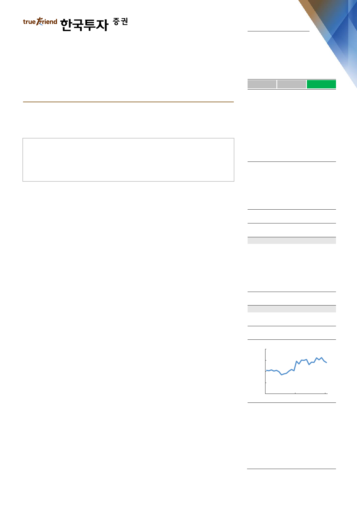

실적 Review
2019. 2. 1
삼성엔지니어링(028050)
하 회
부 합
영업이익의 컨센서스 대비를 의미
상 회
보수적 가이던스와 수주 파이프라인의 괴리
화공 사업부 턴어라운드와 비화공 사업부 정산이익으로 컨센서스 상회
수주 가이던스 28% 하향하나 파이프라인 감안 시 초과 달성은 선택의 문제
보수적 수주 우려는 주가에 기반영. 시간을 두고 지켜볼 필요
Facts : 화공 사업부 턴어라운드와 비화공 사업부 정산이익으로 컨센서스 상회
31일 발표된 삼성엔지니어링의 4분기 실적은 해외 현장의 추가 원가 인식에도 불
구하고 화공 사업부의 턴어라운드와 비화공 사업부의 정산이익 반영으로 컨센서스
를 상회했다. 매출액은 전년동기 대비 27% 증가한 1.6조원을, 영업이익은 전년동
기 대비 729% 급증한 560억원을 기록했다. 문제 현장으로 지목되던 UAE
CBDC현장의 마무리 공사 과정에서 300억원의 추가 원가가 발생했으나 화공 사
업부의 흑자기조를 꺾지는 못했다. 또한 공사 완료에 따른 정산차익으로 비화공
부문의 이익률이 개선된 점도 힘을 보탰다. 한편 과거 대규모 해외현장 손실로 계
상된 이연법인세 자산이 차감되며 당기순이익은 적자 전환했다.
Pros & cons : 수주 가이던스 28% 하향하나 파이프라인 감안 시 초과
달성은 선택의 문제
경영진은 2015년말 이후 처음으로 연간 실적 가이던스를 제시했다. 하지만 시장에
서 우려했던 것처럼 제시된 신규 수주 가이던스는 2018년 대비 28% 줄어든 6.6
조원으로 제시됐다. 2018년 9.2조원의 신규 수주로 2.5년치 수주잔고를 확보한 상
황에서 무리한 수주는 오히려 독이 될 수 있다는 판단이다. 수주 목표 자체는 아쉽
지만 과거 무리한 해외수주가 초래했던 결과를 돌이켜봤을 때 수긍할 수 있고 오히
려 합리적인 접근 방식이라 판단한다. 오만, 바레인, UAE 등지에서 수주한 대형 프
로젝트의 진행 상황과 향후 발주되는 프로젝트의 성격을 고려한 선택적인 수주는
지속적인 성장을 위해 반드시 필요한 과정이다. 또한 올해 발주가 예상되는 파이프
라인을 고려하면 언제든지 초과 달성의 가능성이 열려있다는 점도 긍정적이다.
Action : 보수적 수주 우려는 주가에 기반영. 시간을 두고 지켜볼 필요
2017년부터 이어진 수주 모멘텀으로 2018년말 19,000원을 넘어서던 주가는 최
근 모멘텀 둔화에 대한 우려로 부진한 모습이다. 시장의 우려가 어느 정도 현실화
된 지금 단기적인 주가의 상승 동력은 제한될 수밖에 없을 것이다. 하지만 이미 우
려는 주가에 반영되어 있고 향후 확실한 이익 증가로 수주잔고의 질을 증명하는
가운데 보수적 수주 가이던스를 넘어서는 가능성을 보여줄 경우 주가는 다시 한
번 뛰어오를 전망이다.
매수(유지)
목표주가: 21,000원(유지)
Stock Data
KOSPI(1/31)
주가(1/31)
시가총액(십억원)
발행주식수(백만)
52주 최고/최저가(원)
일평균거래대금(6개월, 백만원)
유동주식비율/외국인지분율(%)
주요주주(%) 삼성SDI 외 7 인
국민연금
2,205
16,750
3,283
196
20,200/14,500
22,837
77.4/29.5
20.6
9.3
Valuation 지표
PER(x)
PBR(x)
ROE(%)
DY(%)
EV/EBITDA(x)
EPS(원)
BPS(원)
2017A
NM
2.4
(4.5)
0.0
25.0
(231)
5,236
2018F
47.9
3.1
6.6
0.0
13.7
350
5,451
2019F
14.5
2.5
19.1
0.0
9.9
1,154
6,606
주가상승률
절대주가(%)
KOSPI 대비(%p)
1개월
(4.8)
(12.9)
6개월
(1.5)
2.5
12개월
(4.3)
9.8
주가추이
(원)
24,000
18,000
12,000
6,000
0
Jan-17
자료: FnGuide
Jan-18
Jan-19
김치호
chiho.kim@truefriend.com